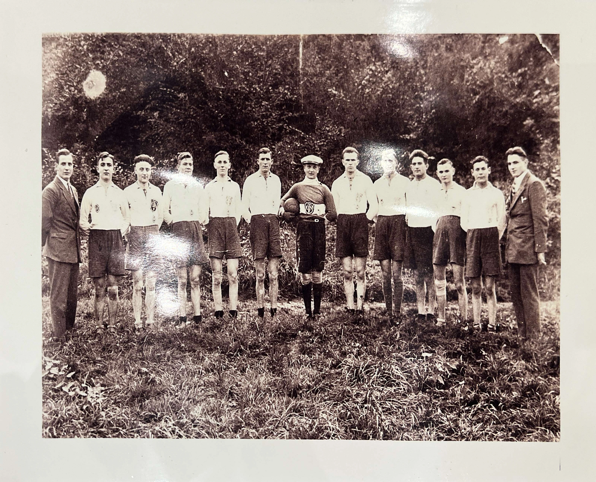
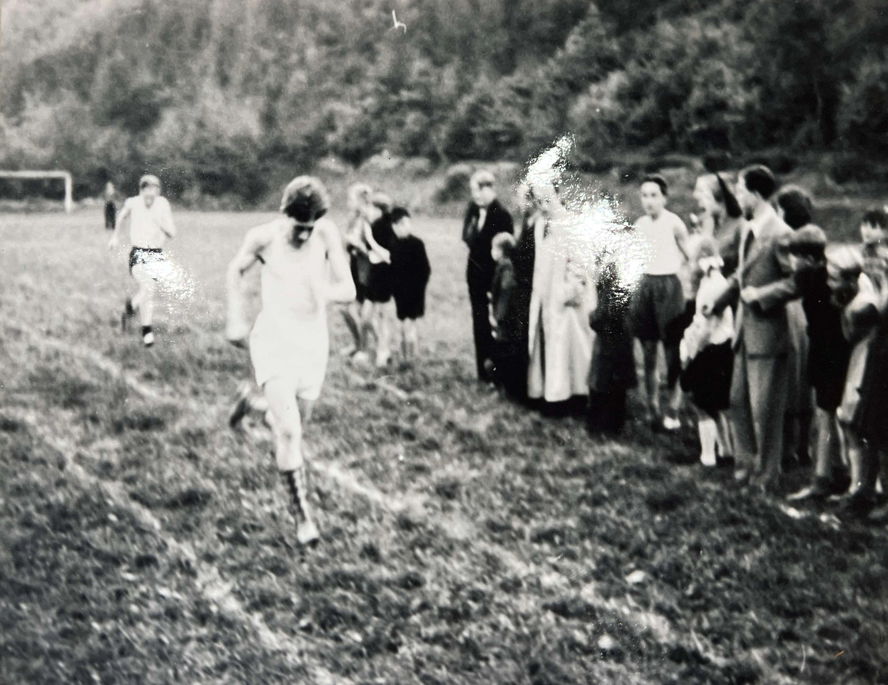
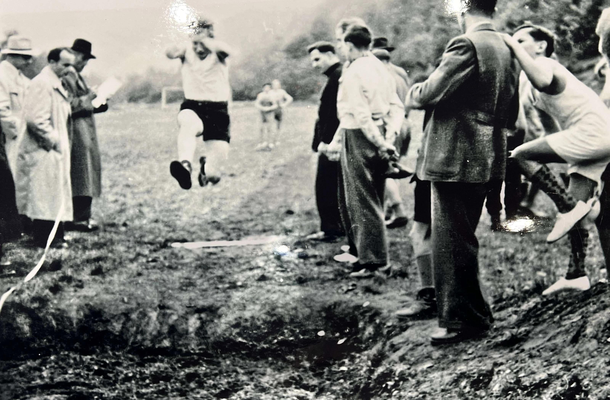
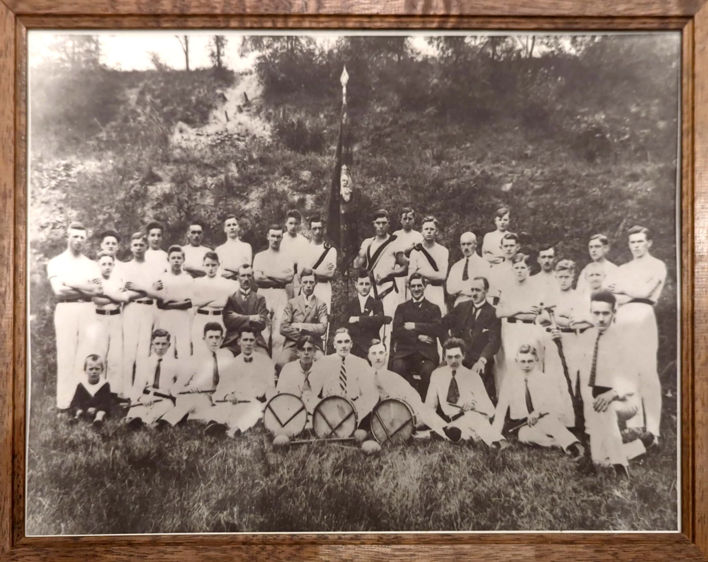

Chronik der Turngesellschaft „Jahn“ Namedy 1910 e.V.
Gründungsjahr: 1910
Vereinsfarben: Grün/Weiss
Am 08. Mai 1910 versammelten sich laut Gründungsbuch der Turngesellschaft „Jahn“ (kurz TG Jahn) mehrere turnlustige Jünglinge im Lokal Josef Ott, um einen Turnverein zu gründen. Als 1.Vorsitzender wurde Barthel Fuchs und als 1.Turnwart Josef Milles gewählt. Man einigte sich auf eine Turnkleidung mit weißer Hose, schwarzem Trikot, schwarzem Gummigürtel sowie weißer Mütze. Sie wurde erstmals beim Gaufest am 17. Juni 1910 in Ettringen ge- tragen. Der Stiftungsball fand im selben Jahr am 24. September statt. Aus den Protokollbüchern ist zu entnehmen, dass sich die Turnbrüder monatlich im Vereinslokal trafen, um die sportlichen Dinge zu besprechen. Erster Höhe- punkt der Gesellschaft war ein Empfang mit Fackelzug bei Seiner Durchlaucht Prinz Karl Anton von Hohenzollern im Schloss Namedy. Ferner wurde am 06.01.1912 beschlossen, den Geburtstag Seiner Majestät des Kaisers und Königs Wilhelm II. mit einer Tanzbelustigung festlich zu begehen.
Im Laufe der Jahre nahm der Verein sogenannte „Zöglinge“ auf, die nach längerer Zugehörigkeit als Turnbrüder anerkannt wurden. Zum zweiten Stiftungsfest, verbunden mit der Fahnenweihe am 09.06.1912 erschienen Turn- vereine aus Andernach, Eich, Thür, Bell, Plaidt und Miesenheim, um ein Turnfest zu begehen. Der 1.Weltkrieg unterbrach das Vereinsleben der TG Jahn bis August 1919. Zum Gedenken an die gefallenen Turnbrüder wurde eine Ehrentafel geschaffen, die sich im Vereinsheim befindet.
Zunächst wurde in der alten Schule in der Bachstraße - heute Schlossstraße Nr. 53 - eine Turnhalle hergerichtet, in der die Turner und auch Handballer trainieren konnten. Den Protokollbüchern der nachfolgenden Jahre entnimmt man, dass die Turnbrüder neben dem Sommerschluss-Turnen und den Gauturnfesten zwei weitere besondere Ver- anstaltungen jährlich durchführten. Die Gauversammlung übertrug jedes Jahr einem anderen Turnverein die Ge- staltung des „Bergfestes“. Im Jahre 1926 wurde die TG Jahn mit der Durchführung dieses Bergfestes beauftragt. Alle Turn vereine des gesamten Gaues trafen sich hier,um ihr turnerisches Können zu zeigen. Ferner führte die TG Jahn jährlich eine „Götzwanderung“ durch, an der sich fast die gesamte Bevölkerung des Ortes beteiligte.
In der Versammlung vom 27. März 1926 unter Vorsitz von Johann Host, wurde eine Feld-Handballmannschaft ins Leben gerufen. Die Vereinsfarben sollten eine Herren- und eine Jugendmannschaft tragen. Das Training wurde auf den Platz in der „Mark“ verlegt. Die TG Jahn zeigte sich äußerst aktiv und vielseitig. Sie betrieb Leichtathletik und unterhielt eine eigene „Knüppel-Musik“, veranstaltete Stiftungsfeste, Neujahrsbälle, Weinachtsfeiern und Sommer- feste. Im Jahre 1928 errang die Mannschaft der Jugendklasse des Jahrgangs 1910/1911 beim Jugendtag in Mayen mit den Mitgliedern Matthias Ott, Anton Helf, Anton Kirchesch II., Theobald Kirchesch und Fritz Stölzgen den ersten Mannschaftspreis. Ein weiterer großer Erfolg war die Erringung der Gau-Meisterschaft 1933 durch unsere Senioren- turnriege. Ebenso konnte in Mayen im Jahre 1935 der Turnerwanderpokal von der TG Jahn Namedy errungen werden. Beachtliche Erfolge erzielte in den 30er Jahren auch die 4 x 100 Meter Sprintstaffel in der Besetzung Ernst Schäfer, Peter Stölzgen, Peter Kirchesch und Hans Röder.
Auch kulturelle Veranstaltungen wie Theaterstücke ergänzten das Angebot der TG Jahn. Die rege Arbeit zum Wohle der Gesellschaft wurde durch den 2. Weltkrieg unterbrochen. 1948 begann man wieder mit der Vereinsarbeit. Das Wiederaufleben der sportlichen Aktivitäten war besonders Hans Röder und Anton Jox zu verdanken. Die damalige französische Besatzung erlaubte jedoch nicht das Beibehalten des Vereinsnamens und so nannte man vorüber- gehend den Verein „Grün-Weiß Namedy“. Es ist bedauerlich, dass dem Verein keine Geschäftsunterlagen aus der Zeit von 1935 bis in die 50er Jahre vorliegen. 1950 wurde in einer Feierstunde der 22 gefallenen Turnbrüder ge- dacht und zu ihrem steten Gedenken enthüllte man eine Gedenktafel, die sich ebenfalls heute im Vereinsheim be- findet. In der nun folgenden Zeit war man in der TG Jahn sehr aktiv. So hatte man neben einer 1. u. 2. Feld-Handball- mannschaft eine Jugendmannschaft sowie eine Schülerjugend- und eine Seniorenturnriege, wobei die Jugendturner schöne Erfolge erzielten. Leider hatte man aus dem Turnraum der alten Schule in der heutigen Schlossstraße eine Wohnung geschaffen und somit musste, nachdem auch kein Saal zur Verfügung stand, der Turnbetrieb 1954 zwangsläufig eingestellt werden. Die TG Jahn war nunmehr lediglich durch die Feld-Handballer sportlich vertreten, die nach Kreis- und Bezirksmeisterschaft mit der Landesliga die damals zweithöchste Spielklasse erreichte.
Zwei weitere Höhepunkte der 1. Feld-Handballmannschaft waren die Erringung des „Steinernen Handballes“ 1958 und 1968. Die Handballabteilung, die noch 1974 die Hallenhandball-Meisterschaft und damit den Aufstieg in die Landesliga schaffte, musste 1979 nach über 50 Jahren wegen Nachwuchsmangels aufgelöst werden. Seit 1966 war es dem Verein möglich, den Saal des Vereinswirtes „Zur Krone“ in der Hauptstraße für den Turnbetrieb zu nutzen. Leider nur ein kurzes Aufleben alter Vereinstraditionen - mit nur 25 Turnern. Die Jugend wandte sich mehr den Sportarten Tischtennis und dem Fußball zu. Die Tischtennisabteilung entstand 1965 und erlebte Anfang der 80er Jahre unter der Leitung von Marietheres Gesell mit über 60 Aktiven einen großen Aufschwung. Die Mädchen- und die Schülerinnenmannschaften des Vereins errangen unter Robert Mayer bei den Pokalmeisterschaften des Kreises Mayen-Cochem-Zell 1982/1983 die Pokalmeisterschaft. Seit 1985 führte Heinz Hermanns die Tischtennisabteilung. Höhepunkte waren die Ausrichtung der Tischtennis Rheinlandmeisterschaften 1987 im Damen- und Herrenbereich sowie in den Freizeitklassen.
Mit der Fertigstellung der Schulsporthalle Namedy im Jahre 1987 richtete die Tischtennisabteilung außerdem dort die „Verbandsranglistenkämpfe der Junioren“ und im April 1988 die „Bezirks-Minimeisterschaften“ aus. Jährliche Tisch- tennis-Dorfmeisterschaften rundeten die Aktivitäten der Tischtennisabteilung, die in den letzten Jahren deutlich zurückgegangen ist, ab. Zurzeit ist die Tischtennisabteilung, die von Friedhelm Rath geführt wird, nur noch mit zwei Mannschaften in der Freizeitklasse vertreten.
Die Gründung einer Fußballabteilung fand 1969 statt. Erste Jugendfußballmannschaften nahmen auf Anregung von Mathias Degen den Spielbetrieb auf. 1978 begann man unter Friedhelm Schnurre mit dem Aufbau einer Senioren- mannschaft. Ab dem 01.07.1979 nahm zum ersten mal eine 1. Fußballmannschaft der TG Jahn am Meisterschafts- spielbetrieb des Fußballverbandes Rheinland teil. Im ersten Meisterschaftsjahr wird sofort die Meisterschaft und damit der Aufstieg in die C-Klasse erreicht. Eine 2. Fußballmannschaft wird 1985 unter Elmar Jansen gegründet. Ab 1990 gibt es nur noch eine Alte Herren Mannschaft und der Jugendspielbetrieb wird wieder forciert, u. a. wird mit dem VfL Brohl eine Jugendspielgemeinschaft geschlossen. Aufgrund der guten Jugendarbeit kann 1996 wieder eine 1. Fuß- ballmannschaft den Spielbetrieb aufnehmen. In der Saison 1999/2000 bildet die Turngesellschaft „Jahn“ mit Eich/Kell im Seniorenbereich eine Spielgemeinschaft und bildet die 2. Mannschaft der SG Eich/Kell/Namedy. 2005 tritt Namedy aus der Spielgemeinschaft aus.
Höhepunkt im Jugendbereich waren die Jahre 2006 bis 2009. Cirka 120 Kinder spielten in allen Jugendklassen von den Bambinis bis zur A-Jugend zeitweise auch in Spielgemeinschaften mit der VfL Brohl Fußball. Ein besonderes Erlebnis war das Fußballcamp, das 2008 ausgerichtet wurde. Auch der DFB schenkte mit dem DFB-Mobil 2008 der Jugendarbeit innerhalb der TG „Jahn“ seine Aufmerksamkeit. Im Jugendbereich spielen aktuell ca. 40 Kinder und Jugendliche, eine D und eine B Jugend. Hervorzuheben ist neben jungen Fußballtrainern wie Patrick Länder, Aaron Blatt und Marco Kollmer auch die notwendige Pflicht, Schiedsrichter zu stellen. Für die TG „Jahn“ übernahmen dieses ehrenvolle Amt bisher Ferdinand Fuchs, Hans Josef Kerp, Helmut Kohlhaas, Helmut Orlik, Hubert Simon, Elias Schwenk und Max Kölsch. Den höchsten Einsatz erreichte Hans Josef Kerp als Linienrichter in der 2. Bundesliga. Lange Jahre fungierte Helmut Kohlhaas als Schiedsrichterbeobachter in der Oberliga.
1982 begann unter Margot Stölzgen der Aufbau einer Skiabteilung, die von Theo Kirchesch im Jahre 1987 für Lang- lauf und Ski- Alpin fortgeführt wurde. Höhepunkte der Skiabteilung waren u. a. Fahrten in den Schwarzwald und in die Tiroler Gletscherwelt. In den Folgejahren beschränkten sich die Angebote der Skiabteilung auf eine Skifreizeitwoche in den Osterferien. 2002 wurde die Skiabteilung aufgelöst. Seit 1983 wird „Gymnastik für Frauen“ von Margarete Busch-Tilp angeboten. Der Aufbau des Mutter-Kind-Turnens erfolgte unter Andrea Stein und wird aktuell von Sandra Hück geleitet. Mit der Verpflichtung von Birgit Friedland begann der Aufbau einer Kinder u. Jugendturngruppe. Hieraus entwickelte sich die Leichtathletikgruppe. Eine Bauch-Beine-Po Gruppe rundet das Fitness-Angebot der TG „Jahn“ ab. Beide Gruppen werden von Anna Kirchesch geführt. Höhepunkte der Leichtathletikgruppe waren der mehrmals organisier- te Sprudellauf in Namedy, Teilnahme an Wettkämpfen in Neuwied, Mayen und die Teilnahme am Rasselstein-Lauf 2009. Ende 1989 gründete Thomas Ebing eine Badminton-Gruppe, die aktuell von Henny Peters geführt wird. Einen besonderen Stellenwert in der Jugendarbeit der TG Jahn geniest das Zeltlager für Kinder und Jugendliche in den Sommerferien, das 1993 von Friedhelm Schnurre ins Leben gerufen wurde und aktuell nicht mehr angeboten wird.
2005 fand am bestehenden Sportplatz die Grundsteinlegung für den Bau eines Sportlerheims statt. Im Vordergrund stand dabei, vernünftige und zeitgemäße Umkleideräume und Sanitäreinrichtungen anzbieten. Mit Unterstützung ortsansässiger Unternehmen und tatkräftiger Helfer wurde das Sportlerheim unter der Anleitung von Alfred Ast „hochgezogen“ Die über Jahre bestehende behelfsmäßige Containerlösung hatte mit der Einweihung des Sportler- heims am 16.06.2007 ein Ende. Parallel zum Bau des Sportlerheims begann man im Ortsbeirat unter Ortsvorsteher Hartmut Dressel und der Stadtverwaltung Andernach mit Überlegungen, den bestehenden Sportplatz so zu erweitern, dass ein offizieller Spielbetrieb im Fußball mit 11er Mannschaften möglich ist. Durch die Bereitschaft der Familien Bohn, Ritzdorf, Gonsberg und Reinhard, von ihrem Gartengelände für die Erweiterung Grund und Boden abzutreten, konnte der langersehnte Wunsch der Sportplatzerweiterung umgesetzt werden, und somit auch die 1. Mannschaft ihren Spielbetrieb wieder aufnehmen. Die Einweihungsfeier des vergrößerten Sportplatzes fand am 07. Juni 2008 statt. Das Sportlerheim wurde im April 2006 fertig gestellt.